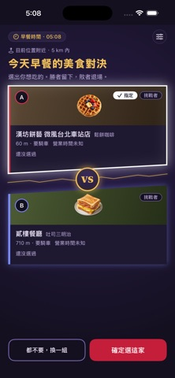
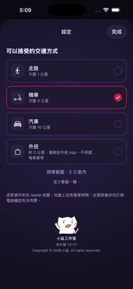

01
先選交通方式
在設定裡選走路、機車、汽車或外送，讓附近店家的搜尋範圍符合你的出門方式。
從附近的兩家店開始，選比較想吃的一家。每次只做一個小決定，直到找到今天想去的地方。
在設定裡選走路、機車、汽車或外送，讓附近店家的搜尋範圍符合你的出門方式。
點比較想吃的一家暫選，再按「確定選這家」。贏家留下，另一邊換新的挑戰者。
選到想去的店後，按「去吃這家」查看店家資訊，再使用導航或外送搜尋入口。

每一回合都有兩家候選店。選中的卡片會顯示暫選狀態，確認前仍可改變心意。

步行、騎車、開車或叫外送，願意找的範圍不一樣。從右上方設定入口調整。
畫面中的距離、店家與搜尋結果僅供示例，會隨位置、時段與資料來源而變動。
按「去吃這家」進入店家頁，核對店名與地址，再按畫面中的導航入口。不同版本或設備的地圖選項可能不同。
外送功能協助複製店名，並開啟 Foodpanda 或 Uber Eats 搜尋。是否有店家、是否配送與實際訂單內容，請在外送平台確認。
店家資料來自 Apple 地圖，不一定有完整營業時間。出發前可查看店家資訊或聯絡店家，避免到了才發現沒開。
App 會記錄你常選的店；導航後回到 App，可能會詢問剛才的店是否營業。依實際情況回報即可。
找附近店家與計算距離需要位置資訊。請依 iPhone 顯示的提示決定授權；若沒有結果，先檢查定位與網路狀態。
不一定。地圖資料與使用者回報都可能落後，請在出發前再次確認。
不會。App 協助複製店名與開啟外送搜尋，實際是否能配送、費用與下單都在外送平台處理。
本手冊使用官方 App Store 截圖。截圖中的店家是當時畫面示例，實際推薦與圖片以你當下看到的資訊為準。